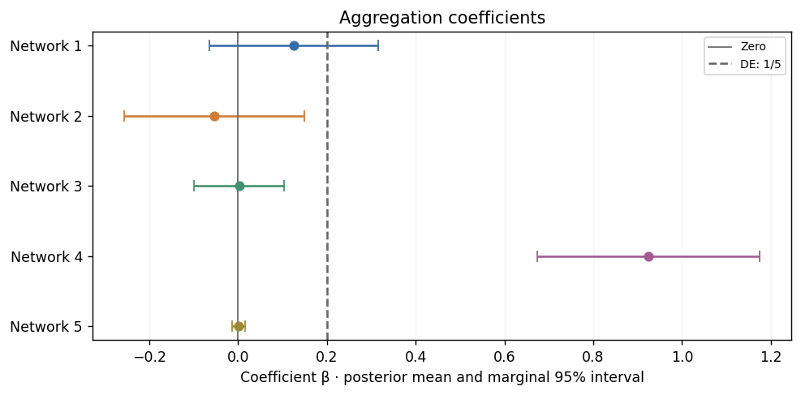
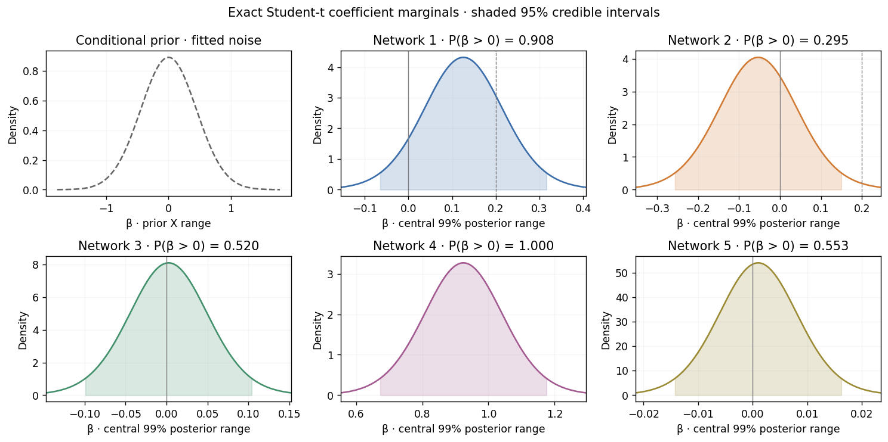
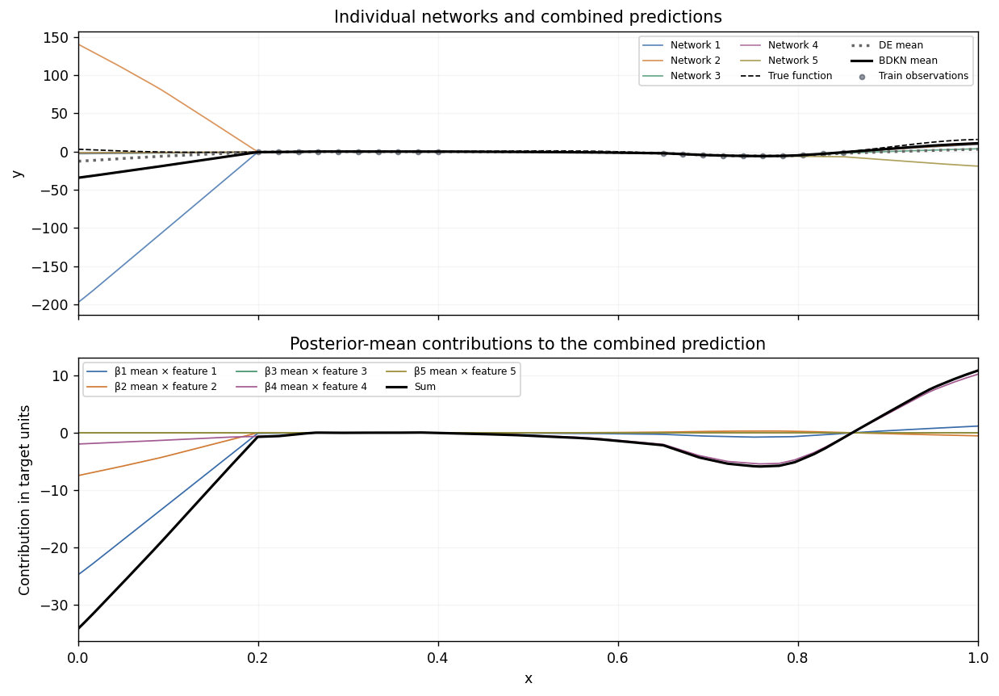
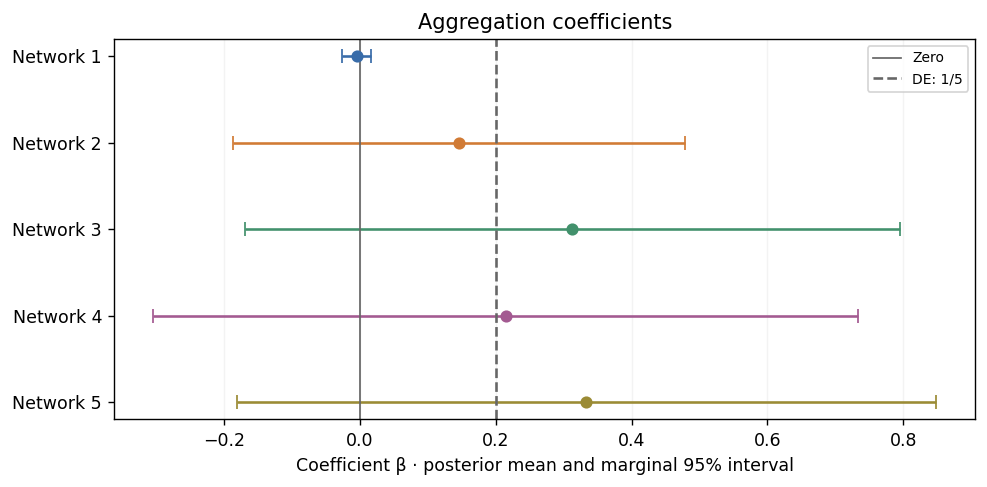
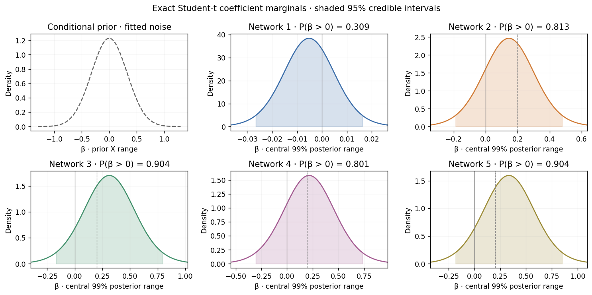
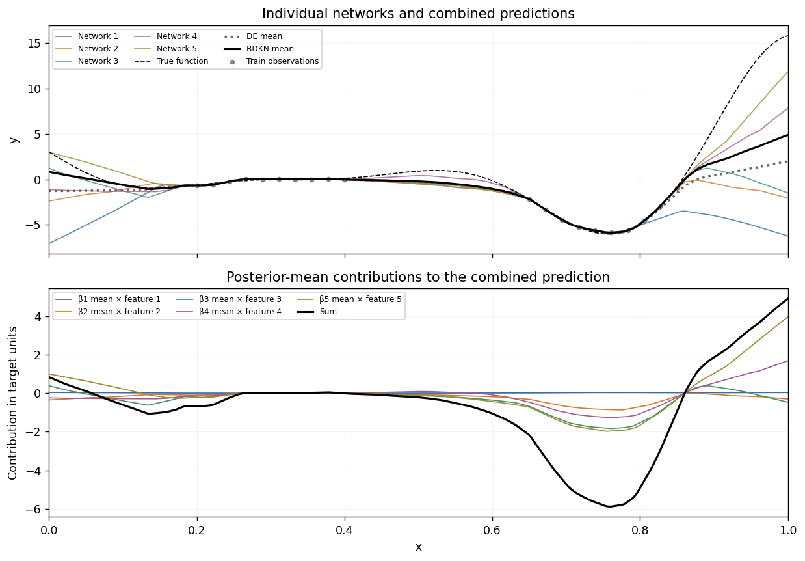
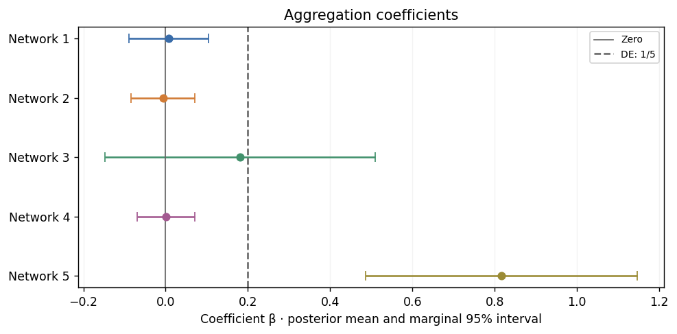
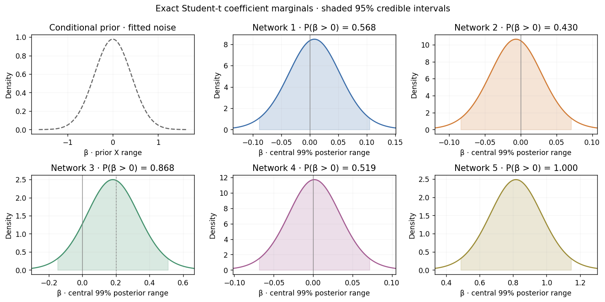
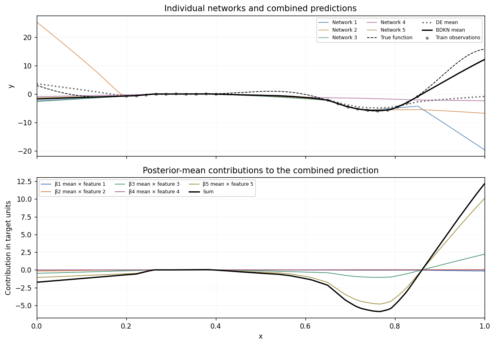

Regression comparison
Download resultsAggregation weights
Coefficients can be negative and need not sum to one. Intervals describe coefficient uncertainty; the dashed reference is DE’s fixed 1/H weight.
BDKN


Each density panel uses its own X range for readability; coefficient intervals above share a common axis. Prior reference conditions on fitted noise. Contribution shares use held-out inputs; test targets are used only for scoring.
| Network | β mean | 95% low | 95% high | P(β > 0) | Contribution share | Test RMSE | Test NLL |
|---|---|---|---|---|---|---|---|
| 1 | 0.04436 | -0.25239 | 0.34112 | 0.62081 | 0.02077 | 2.77758 | 1690.98373 |
| 2 | -0.44101 | -0.90097 | 0.01895 | 0.02963 | 0.20503 | 4.14137 | 2585.39364 |
| 3 | -0.04979 | -0.52027 | 0.42070 | 0.41376 | 0.02849 | 2.11616 | 3948.29119 |
| 4 | 0.96865 | 0.63295 | 1.30434 | 1.00000 | 0.53969 | 1.93914 | 2182.53233 |
| 5 | 0.47701 | -0.05980 | 1.01383 | 0.96070 | 0.20602 | 3.77514 | 19156.44097 |
Functional repulsion · BDKN



Each density panel uses its own X range for readability; coefficient intervals above share a common axis. Prior reference conditions on fitted noise. Contribution shares use held-out inputs; test targets are used only for scoring.
| Network | β mean | 95% low | 95% high | P(β > 0) | Contribution share | Test RMSE | Test NLL |
|---|---|---|---|---|---|---|---|
| 1 | 0.12573 | -0.06461 | 0.31606 | 0.90827 | 0.46187 | 49.08740 | 9620.38264 |
| 2 | -0.05324 | -0.25611 | 0.14963 | 0.29507 | 0.14851 | 35.57389 | 387.79079 |
| 3 | 0.00247 | -0.09894 | 0.10388 | 0.52003 | 0.00078 | 3.47267 | 664.96977 |
| 4 | 0.92417 | 0.67308 | 1.17526 | 1.00000 | 0.38819 | 1.70996 | 1785.52808 |
| 5 | 0.00099 | -0.01424 | 0.01621 | 0.55309 | 0.00065 | 9.19701 | 18946.81510 |
Weight repulsion · BDKN



Each density panel uses its own X range for readability; coefficient intervals above share a common axis. Prior reference conditions on fitted noise. Contribution shares use held-out inputs; test targets are used only for scoring.
| Network | β mean | 95% low | 95% high | P(β > 0) | Contribution share | Test RMSE | Test NLL |
|---|---|---|---|---|---|---|---|
| 1 | -0.00518 | -0.02656 | 0.01620 | 0.30950 | 0.00728 | 6.00111 | 2985.16959 |
| 2 | 0.14520 | -0.18777 | 0.47817 | 0.81308 | 0.12232 | 4.41819 | 11340.82366 |
| 3 | 0.31272 | -0.16970 | 0.79515 | 0.90430 | 0.24679 | 4.00392 | 22500.58429 |
| 4 | 0.21447 | -0.30435 | 0.73330 | 0.80063 | 0.22091 | 2.36130 | 53095.46306 |
| 5 | 0.33349 | -0.18175 | 0.84872 | 0.90397 | 0.40270 | 1.60188 | 7498.85432 |
First-order repulsion · BDKN



Each density panel uses its own X range for readability; coefficient intervals above share a common axis. Prior reference conditions on fitted noise. Contribution shares use held-out inputs; test targets are used only for scoring.
| Network | β mean | 95% low | 95% high | P(β > 0) | Contribution share | Test RMSE | Test NLL |
|---|---|---|---|---|---|---|---|
| 1 | 0.00807 | -0.08885 | 0.10499 | 0.56809 | 0.01185 | 8.87705 | 9422.18770 |
| 2 | -0.00657 | -0.08372 | 0.07058 | 0.43038 | 0.01302 | 8.62084 | 16551.71711 |
| 3 | 0.18151 | -0.14736 | 0.51038 | 0.86840 | 0.19044 | 1.77411 | 304218.93355 |
| 4 | 0.00164 | -0.06839 | 0.07168 | 0.51927 | 0.00073 | 4.97949 | 20.87395 |
| 5 | 0.81695 | 0.48666 | 1.14723 | 0.99998 | 0.78396 | 1.51372 | 14694.05418 |